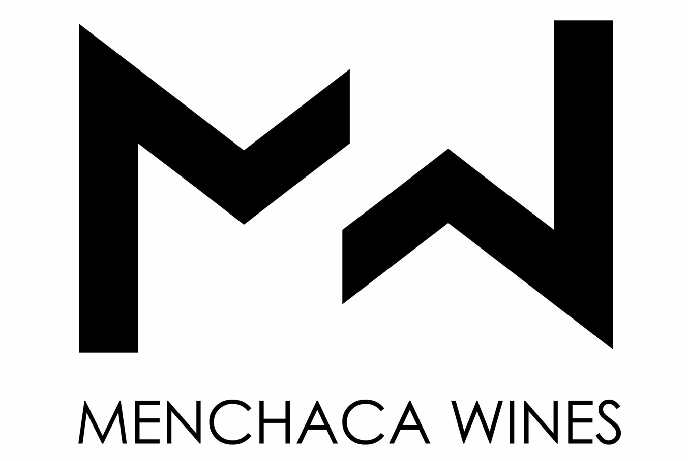

MENCHACA WINES
Menchaca Wines produces red wines from multi-varietal plots, notable for their originality thanks to century-old vines grown in a historic vineyard that was restored in 1947. The wines originate from a traditional winemaking region on the central plateau, very near the Spanish capital, in the village of El Molar. These are wines with a distinctive character, a true reflection of a land steeped in heritage.
Today, Menchaca Wines continues a longstanding legacy of quality winemaking, guided by know-how passed down through generations. With passion and dedication, the winery strives to surprise and delight those who taste its creations—among them, the standout 100 Palos and the unique and expressive wines from the Botargas Collection.